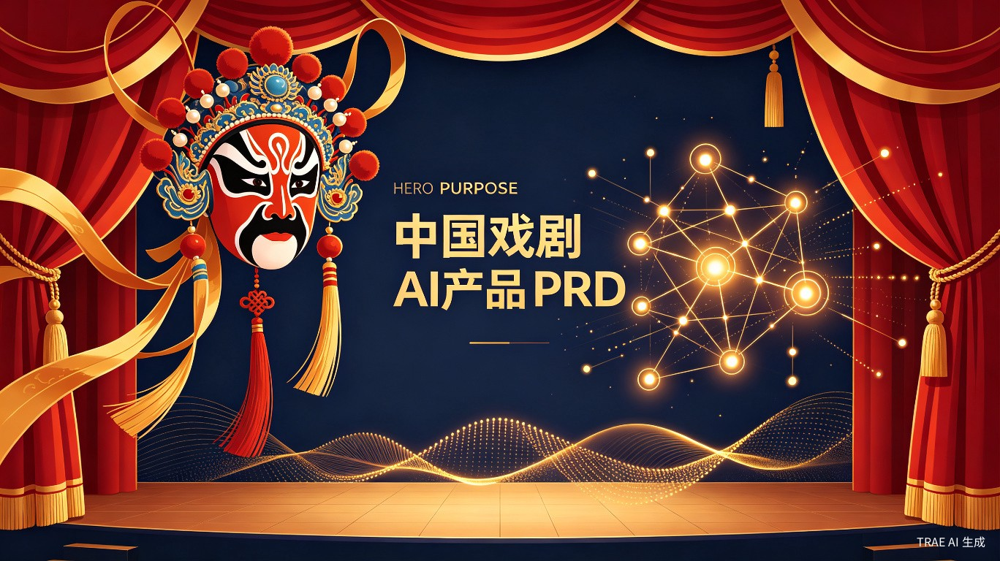

AI 戏曲创作与欣赏平台 — 产品需求文档
戏曲是中国传统文化的瑰宝，但面临着严峻的传承危机。据统计，中国现有戏曲剧种约 348 个，其中超过一半处于濒危状态。与此同时，AI 技术已经能够生成高质量的戏曲唱词，Qwen3 等模型已能模拟京剧、粤剧、评弹等多种剧种的格律和方言特征。
现有的戏曲类 APP 存在明显短板：界面复杂、搜索门槛高、缺乏互动创作功能，无法吸引年轻用户，也难以服务老年戏迷。市场上没有一款产品同时满足"听戏方便"和"创作有趣"这两个核心需求。
参加 2026 TRAE AI 创造力大赛，选择生活娱乐赛道。产品核心创新点在于"AI 戏曲创作"功能，这是市面上几乎没有的方向，具备极强的差异化和话题性。
| 用户类型 | 特征 | 核心需求 | 使用频率 |
|---|---|---|---|
| 老年戏迷 | 60岁以上，热爱戏曲，不擅长使用智能手机 | 方便听戏、看唱词 | 每天 |
| 年轻戏迷 | 20-40岁，对传统文化有兴趣 | 发现好戏、学习戏曲知识 | 每周数次 |
| 戏曲创作者 | 票友、编剧、戏曲从业者 | AI辅助创作、获取灵感 | 创作时使用 |
| 文化爱好者 | 对传统文化好奇的普通用户 | 体验AI创作、社交分享 | 偶尔 |
张大爷今年 72 岁，喜欢听京剧。他打开"梨园新声"，按住语音按钮说"来段梅兰芳的贵妃醉酒"，系统自动播放，同时大字体显示唱词。张大爷可以跟着唱词一起哼唱，遇到喜欢的段落点击收藏。
小李是一名大学生，对传统文化感兴趣。他在"AI 创作"页面选择"京剧"，输入主题"关于春天的故事"，AI 生成一段七字句的京剧唱词。小李点击"语音朗读"听效果，满意后分享到社区和抖音。
王编剧正在创作一部新戏，需要一段表达"离别之情"的唱词。他使用 AI 创作功能，选择"昆曲"风格，输入"离别"主题，AI 生成多段可选唱词，王编剧在此基础上修改完善。
| # | 模块 | 功能描述 |
|---|---|---|
| 1 | 语音搜戏 | 用户按住语音按钮说话，系统识别语音内容并搜索匹配的戏曲选段。支持剧种、剧目、演员名、唱段名等多维度搜索。搜索结果以列表展示，点击即可播放。 |
| 2 | 戏曲播放 | 播放戏曲音频，同步显示大字体唱词并高亮当前句。支持播放/暂停、进度拖拽、上一首/下一首、收藏、分享。提供"跟唱模式"，逐句高亮辅助用户跟唱。 |
| 3 | AI 戏曲创作 | 用户选择剧种（京剧/昆曲/越剧/黄梅戏/评弹/川剧等），输入创作主题，AI 生成符合该剧种格律的唱词。支持语音朗读生成结果、重新生成、复制文本、分享社区。 |
| 4 | 戏迷社区 | 用户可浏览他人分享的 AI 创作作品，点赞、评论、收藏。支持按剧种筛选，支持搜索。个人主页展示用户的创作历史和收藏内容。 |
| 5 | 个人中心 | 展示用户的收藏列表、创作历史、播放记录。支持设置偏好剧种、字体大小、语音播报开关等。 |
创作主题
关于春天的故事
AI 生成结果
春风拂面柳丝长，
桃李争妍满院香。
燕子归来寻旧垒，
人间处处好风光。
graph TD
A[梨园新声] --> B[首页]
A --> C[AI创作]
A --> D[社区]
A --> E[我的]
B --> B1[语音搜索]
B --> B2[热门推荐]
B --> B3[播放页面]
C --> C1[选择剧种]
C --> C2[输入主题]
C --> C3[生成结果]
D --> D1[作品流]
D --> D2[作品详情]
E --> E1[我的收藏]
E --> E2[创作历史]
E --> E3[设置]
| 层级 | 技术 | 说明 |
|---|---|---|
| 前端框架 | HTML5 + CSS3 + JavaScript | 纯前端实现，无需后端，部署简单 |
| 语音识别 | Web Speech API | 浏览器原生支持，无需额外库 |
| 语音合成 | Web Speech API | 朗读 AI 生成的唱词 |
| 音频播放 | HTML5 Audio | 播放戏曲音频文件 |
| AI 创作 | 大模型 API | 调用 Qwen3 或其他大模型生成戏曲唱词 |
| 部署 | 静态网页托管 | Vercel / GitHub Pages / Netlify |
使用 TRAE IDE 进行前端代码开发，使用 TRAE Work 进行创意文档和产品原型设计。开发过程中保留关键步骤截图和 Session ID，用于初赛提交。
| 指标类型 | 指标名称 | 定义 | 目标 |
|---|---|---|---|
| 用户活跃 | 日活跃用户（DAU） | 每日至少使用一次产品的用户数 | 初赛阶段：Demo 体验次数 > 100 |
| 功能使用 | 语音搜索使用率 | 使用语音搜索的用户 / 总用户 | > 60% |
| 功能使用 | AI 创作使用率 | 使用 AI 创作功能的用户 / 总用户 | > 40% |
| 内容质量 | AI 创作满意度 | 用户点赞 AI 生成作品数 / 总生成数 | > 70% |
| 社交传播 | 分享率 | 分享作品数 / 总作品数 | > 20% |
| 阶段 | 时间 | 任务 | 产出 |
|---|---|---|---|
| Week 1 | 6.16 - 6.22 | 完成报名 + 产品文档 + UI设计 | 创意提案帖、PRD文档、UI设计稿 |
| Week 2 | 6.23 - 6.29 | 开发核心功能：语音搜戏 + 戏曲播放 | 可播放戏曲的 Demo |
| Week 3 | 6.30 - 7.06 | 开发 AI 戏曲创作功能 + 社区页面 | 完整功能 Demo |
| Week 4 | 7.07 - 7.15 | 测试优化 + 部署 + 提交初赛作品 | 部署链接 + 初赛帖 |
| 色彩角色 | 色值 | 用途 |
|---|---|---|
| 主色（宫墙红） | #DC2626 | 品牌色、主要按钮、强调元素 |
| 辅色（琉璃金） | #F59E0B | 次要按钮、标签、高亮 |
| 背景色（深夜蓝） | #0F172A | 页面背景 |
| 表面色（墨蓝） | #1E293B | 卡片、输入框背景 |
| 文字主色 | #F8FAFC | 标题、正文 |
| 文字次要色 | #94A3B8 | 辅助文字、说明 |
| 层级 | 字号 | 字重 | 用途 |
|---|---|---|---|
| H1 页面标题 | 28px | Bold | 页面顶部标题 |
| H2 模块标题 | 22px | Bold | 模块分区标题 |
| H3 卡片标题 | 18px | SemiBold | 卡片、列表项标题 |
| Body 正文 | 16px | Regular | 正文、描述文字 |
| Caption 辅助 | 13px | Regular | 时间、来源、标签 |
| Large 唱词大字 | 24px | Medium | 播放页唱词展示（老年模式 32px） |
使用线性图标（Outline Style），线条粗细 2px，圆角端点。图标尺寸：24px（常规）/ 48px（大按钮内）。图标颜色跟随文字颜色或主色。
| 断点 | 设备 | 布局调整 |
|---|---|---|
| < 480px | 手机 | 单列布局，全宽卡片，底部导航 |
| 480px - 768px | 大屏手机/小平板 | 单列布局，增大间距 |
| > 768px | 平板/PC | 居中容器（最大 480px），模拟手机界面 |